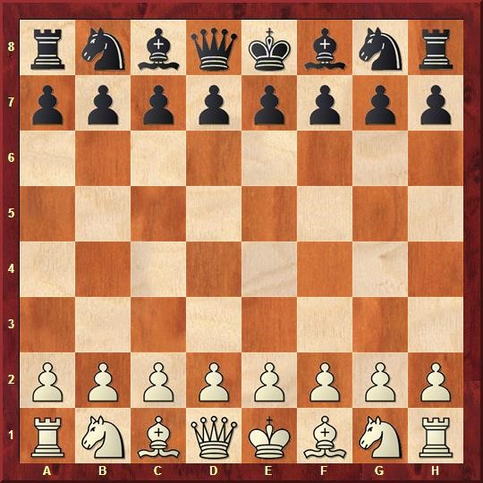

Комплектация
У игроков в начале игры имеется по одинаковому набору фигур. Фигуры одного из игроков условно называются «белыми», другого — «чёрными». Белые фигуры окрашены в светлый цвет, чёрные — в тёмный. Сами игроки называются «белые» и «чёрные» по цвету своих фигур.
В каждый комплект фигур входят: король (♔, ♚), ферзь (♕, ♛), две ладьи (♖, ♜), два слона (♗, ♝), два коня (♘, ♞) и восемь пешек (♙, ♟). В начальной позиции фигуры обеих сторон размещаются так, как показано на диаграмме. Белые занимают первую и вторую горизонтали, чёрные — седьмую и восьмую. Пешки расположены на второй и седьмой горизонталях соответственно.
История фигур
Дизайн шахматных фигур разнообразен. Стандартном де-факто стал так называемый стаунтоновский комплект, разработанный в 1849 году и по сей день применяемый в официальных шахматных турнирах (фигуры этого комплекта показаны на иллюстрации), но существует множество резко отличающихся вариантов дизайна, например, фигуры, изображающие солдат конкретных армий, известных людей, сказочных персонажей, животных, персонажей определённых произведений и так далее.
Copyrights
«Проигравший всегда неправ» © Василий Панов
Узнайте об основах игры!
